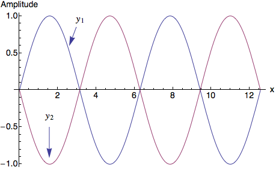
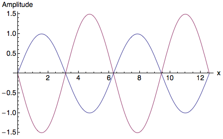
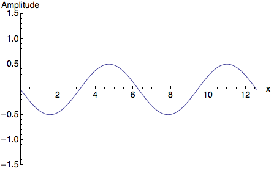

There's an important principle in wave mechanics: the principle of superposition. Two waves can pass through the same space in the same time, and the result is a wave that is the sum of those two waves. And if you have three or four or seventy-seven waves, the net effect is again simply the sum.
You've seen this before in a swimming pool. If the water were perfectly still, you could drop a rock in and see the waves spread outward from the splash, in neat little circles. But if there are people diving, practicing their backstrokes, and playing water polo, there are waves coming from every direction with a huge variety of amplitudes, frequencies, and wavelengths. If you put a rubber ducky in the water at a specific location, it'll seem to bob up and down almost at random. All the waves added together made a new, complicated wave.
The complicated wave pattern comes from constructive and destructive interference of waves, and it happens with water waves, sound waves, light waves, waves on a string, and essentially any kind of wave.
How does it work? Consider what happens if I have two separate waves, described by:
\[ y_1(x,t) = A_1 \sin (kx - \omega t) \] \[ y_2(x,t) = A_2 \sin (kx - \omega t) \]These waves have identical frequencies (they both have frequency \(\omega\)), but different amplitudes (\(A_1\) and \(A_2\)). What happens when we add them together? Well, we get:
\[ y_1(x,t) + y_2(x,t) = (A_1 + A_2)\sin (kx - \omega t) \]The result? A wave with an amplitude of \(A_1 + A_2\). This is constructive interference: the two waves combine to form a larger wave.
You can imagine how this makes sense. If you have two speakers playing music side-by-side (and the speakers are playing the same music at the same time), then the sound is louder than it would be if you only had one speaker. The sound waves constructively interfere to form sound of a higher amplitude. Likewise, if two large people jump into the swimming pool simultaneously, the resulting waves are tremendous.
Now, suppose you have two waves that are out of phase. Mathematically, that would look like this:
\[ y_1(x,t) = A \sin (kx - \omega t) \] \[ y_2(x,t) = A \sin (kx - \omega t - \phi) \]\(\phi\) is a number called the phase angle. If the phase angle is zero, then we're back to the situation from before, and there is constructive interference. But suppose the phase angle is exactly \(\pi\). What happens then? Let's draw a picture of those two waves:
When one wave is positive, the other is negative, with exactly the same (but opposite) amplitude. When you add them, you get zero. This is destructive interference.
Now, it could be more complicated. I chose two waves with exactly the same amplitude above. But I could choose to have one wave bigger than the other:
What's the sum of those waves? It looks like this:
Note how it's smaller. This is still destructive intereference, although the "cancelling out" is not total; some of the wave is still left behind.
Those of you with noise-cancelling headphones experience this effect all the time. How can the headphones make a loud airplane seem nearly silent? Well, they have a small microphone which picks up all the outside sound coming toward your ears, and quickly generate a new sound wave that exactly cancels out the outside sound. The effect? Destructive interference. You barely hear a thing.
Now, there's a third possibility I haven't mentioned yet. What if the two waves don't have the same frequency? We can represent those mathematically as having different frequencies \(\omega_1\) and \(\omega_2\). Their sum is rather interesting. In the simulation below, we have two waves with different frequencies (in color) and their sum (in black). Try playing with different frequencies to see what happens. (Press Play to start the simulation.)
Speed:
Wave 1 frequency:
Wave 2 frequency: